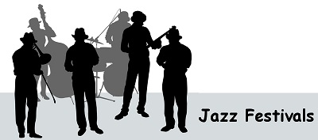

Jazz Festivals Around the World
Jazz music is celebrated all around the world and all through the year. Here is a small list of some of the best festivals.
United States
- Jazz in July Festival, at 92nd Street Y in New York City
- Newport Jazz Festival, in Newport, Rhode Island
- Stanford Jazz Festival, Palo Alto, California
- Atlanta Jazz Festival, Atlanta, Georgia
- Satchmo Summer Fest, in New Orleans, Louisiana
Canada
- Montreal International Jazz Festival in Montreal, Quebec
- Ottawa Jazz Festival, in Ottawa, Ontario
- Toronto Downtown Jazz Festival in Toronto, Ontario
- Vancouver International Jazz Festival in Vancouver, British Columbia
Europe
- France
- Jazz aux Remparts in Bayonne
- Uzeste Musical in Uzeste
Jazz sous les pommiers in Coutances
Banlieues Bleues in Seine-Saint-Denis
Festival International Django Reinhardt in Samois sur Seineh
CareFusion Jazz Festival in Paris
Paris Jazz Festival in the Bois de Vincennes
Sons d'hiver in Val-de-Marne
La Villette Jazz Festival in Paris
Ireland
- Bray Jazz Festival in Bray, Co.Wicklow
- Cork Jazz Festival in Cork City, Co.Cork
- Galway Jazz Festival in Galway City, Co.Galway
Copyright© Around the World Music